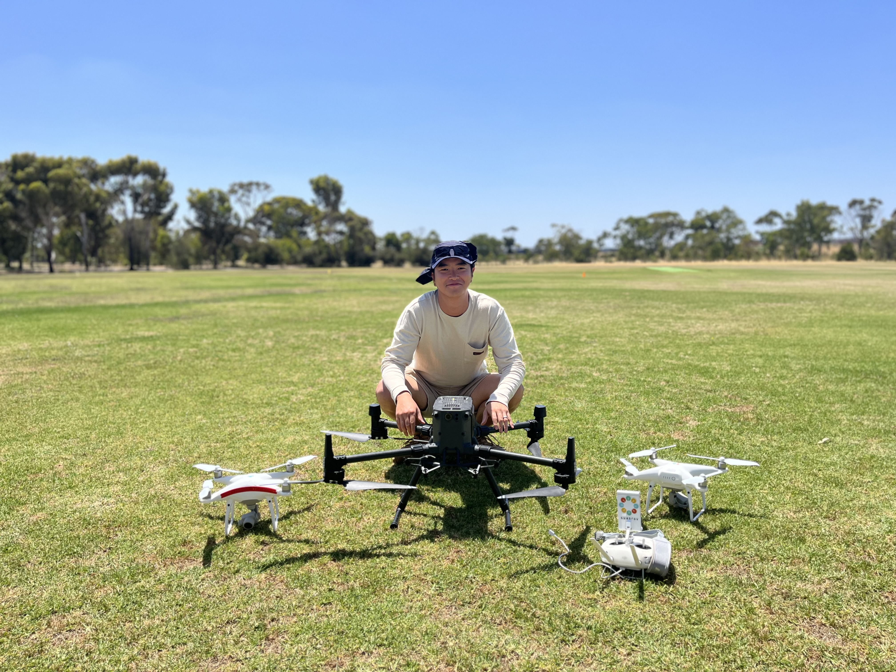

Geoportfolio
Sungchan Hwang
This website is the geoportfolio of Sungchan Hwang. The website entails my experience in surveying industry.
Accomplished and hardworking personnel with a wide variety of surveying experience including property development, geospatial solutions and major infrastructure projects.
Currently completing final year project to officially graduate from Bachelor of Surveying (Honours) at RMIT University
and having strong interest in heavy industrial and transport infrastructure construction, emerging technologies and digital engineering.

Working in Tier 1 projects utilising Leica instruments and 12d package (field, synergy and model), performing high quality field surveys and data reduction,
and drafting As-Built data while focusing on efficient data management.
- Undertake construction set-out surveys requested by site engineers for various concrete structures, steel and composite structures, grid lines and drainages utilising 12d field with Leica TS16.
- Provide accurate as-built surveys of various structures and utilities.
- Process captured survey data, using 12d model and synergy packages with focusing on efficient data management and collaboration with other professionals in projects.
- Liaise with site engineers and supervisors and manage workloads for site surveyors.
- Create construction set-out model from IFC drawings and perform necessary spatial computation on site.
- Take responsibility of Unmanned Ariel Vehicle tasks within construction team, using DJI Phantom RTK or Mavic M3E.
- Ability in training and mentoring less experienced surveyors in terms of field practice and data reduction.
Below are the three snapshot of conducting field surveys.
Note: If the image is too small, right-click the image and 'Open in new tab' to allow zooming of the photo.
Getting exposure to major infrastructure projects and rail construction and understanding project lifecycle and survey requirements
- Enhance skills in Terrestrial laser scanning and point cloud processing by establishing workflows and conducting Quality Assurance and Quality Control.
- Establish control networks for major infrastructure projects and investigate underground utilities for engineers to produce an appropriate design.
- Competent to operate a range of survey equipment such as Trimble TS5 1”, R8 and TX6 HDS scanner.
- Perform conventional feature & level surveys as well as virtual feature surveys from point clouds by utilising extraction tools in Trimble platform, such as Trimble Business Centre and Trimble RealWorks.
- Convert or export data into various CAD formats depending on final deliverables.
- Acting as a lead surveyor and/or a work group supervisor in a project site when required.
- Understand lifecycle of major infrastructure projects and have knowledge of how data can be captured, managed, and collaborated efficiently and professionally in different stages of the projects.
Below are some highlights during the time at ThinkSpatial.
Note: If the image is too small, right-click the image and 'Open in new tab' to allow zooming of the photo.
Digital & Spatial team consists of BIM modellers, 3D scanning (TLS&MLS) and UAV specialists, GIS Analysts, engineering professionals and project managers.
The team provides reality capture and modelling for architectural, engineering or industrial purposes in feasibility, planning, design or deformation stage.
- Take a position as laser scanning surveyor & 3d modeller in digital & spatial team.
- Contribute to the business and elevate the team’s strengths by providing services including but not limited to control establishment, data capture and 3d modelling.
- Competent to operate a range of survey equipment such as Leica P-30, P-40 & RTC 360 HDS scanners GNSS systems, digital levels as well as robotic reflectorless total stations.
- Understand and utilise appropriate latest surveying technologies and practices to complete tasks.
- Convert field data in LISCAD and perform data reduction as well as terrain modelling independently.
- Process the control and vectorisation of 3d point clouds in Leica Cyclone.
- Produce final deliverables in both a survey package and CAD format, particularly in Leica Cyclone, Cyclone 3DR and Autodesk Revit.
Below are some highlights during the time at Veris.
Note: If the image is too small, right-click the image and 'Open in new tab' to allow zooming of the photo.
Global engineering consultancy delivering solutions on urban development and infrastructure.
Work as part of a team or autonomously, assisting project surveyors and senior surveyors to get field works complete in a professional and timely manner.
- Being trained to play a role as a party leader in the field.
- Exposure to large-scale subdivision, cadastral re-establishment, and feature survey tasks.
- Competent to operate a range of survey equipment such as Trimble TS5 1”, R10/R12i, TSC7 and Leica digital level as well as terrestrial laser scanner.
- Process field data in LISCAD and perform data reduction as well as terrain modelling under supervision.
- Work autonomously where possible and collaborate in team environments.
- Learn survey field operations and associated concepts.
- Apply theoretical knowledge to fulfil best practice survey techniques.